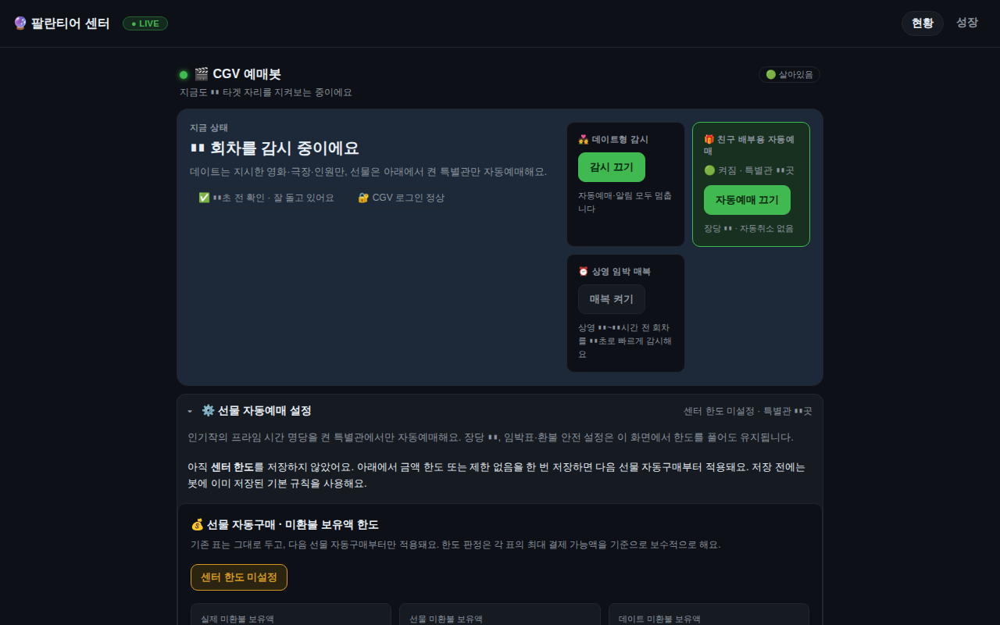
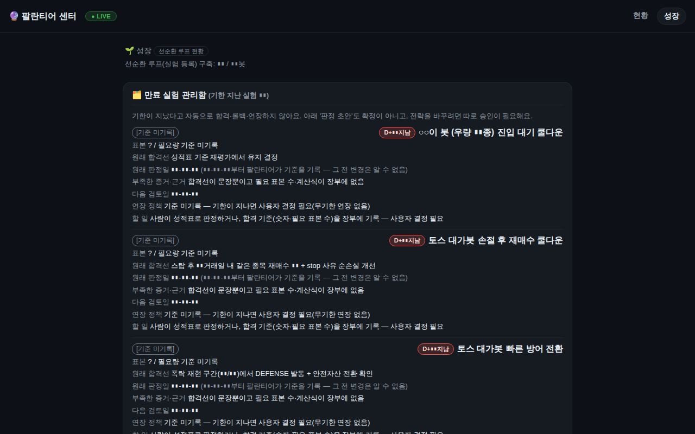
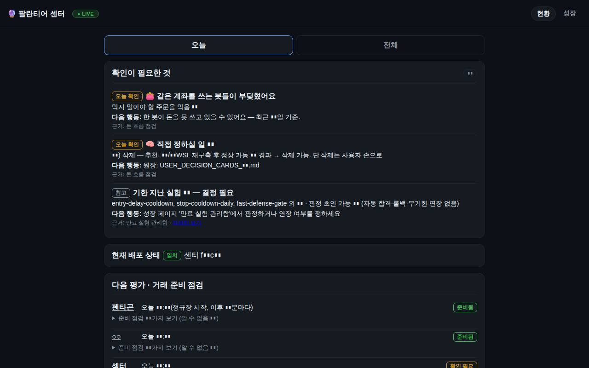

실전 가동
대시보드
💵 실돈Claude Code
팔란티어 센터 Palantir Center
모든 자동매매·예매 봇을 한 화면에서 감시하고 조작하는 통합 대시보드와 총괄 시스템
토스 ○○이봇, 올웨더, 커플 DCA, 코인봇, CGV봇 등 여러 봇의 상태·손익·위험을 읽어 한곳에 보여 주는 FastAPI 서버렌더 대시보드다(내부 포트, PWA).
봇 DB는 읽기전용으로만 열고, 쓰기는 파라미터 테이블과 일시정지·즉시실행 플래그 파일로 한정해 안전을 지킨다.
워치독, 아침 브리핑, 주간·월간 결산, 백업 타이머와 captain(총괄 진단·조언) 모듈, 전 봇 킬스위치, 2단계 확인, 감사 로그를 갖췄다.
2026-09에는 봇이 자기 상태를 선언하고 감시자는 읽기만 하는 '함대 계약 v1'(fleet-data)로 구조를 뒤집어 오탐을 줄였다.
325커밋, 파이썬 약 8만 9천 줄, 테스트 약 2,700개 규모로 이 포트폴리오에서 두 번째로 크다.
- 기간
- 2026-07 ~ 2026-10-02
- 기술
pythonfastapijinja2sqlitepwatelegramsystemd- 코드
- 88,838 줄
- 테스트
- 2,659 개
- 커밋
- 325
- systemd 유닛
- 13 개
- 저장소
- intohumble-ai/palantir-center (비공개)
세션 6 (Claude Code 6 · Codex 0)마지막 활동 2026-10-02
- 2026-10-02 13:53커밋feat(cgv): 판매중(호가) 배지·판매완료/되돌리기 버튼(/cgv/sold, /cgv/unsold)
- 2026-10-02 13:46커밋watchdog: 오경보 표시는 공백 1세션일 때만(진짜 장애 뒤 보류는 중립 RESOLVED)·held_long 문구 사실만·알려진 한계 주석
- 2026-10-02 13:37커밋watchdog 감사 수리: 보류 증거는 봇 DB shortfall 세션만·스냅샷은 평가 완료 증거로만(BROKER_CLOSED 제외·bot_i
- 2026-10-02 13:27커밋watchdog: cycle_stale 전에 '평가 완료(last_evaluated_at)+잔액 부족 보류' 증거 확인 → 매수 보류 중(정보성
- 2026-10-02 10:56Claude Code팔란티어 센터와 live 봇 할당분 확인
- 2026-09-30 22:04커밋feat(cgv): 무대인사 표 배지·규정 마감(전날 23:59) 불일치 경고
- 2026-09-28 21:11커밋feat(center): CGV 인기작 관 패널 — 고정/자동(알파)/제외 상태 배지·버튼, 자동으로 되돌리기(키 삭제), 손상 파일 경고
- 2026-09-28 20:09커밋feat(center): CGV 인기작 감시할 관(보통관) 켜기/끄기 패널 신설
- 2026-09-28 10:08Claude Code○○이봇 ▮▮ 할당
- 2026-09-27 22:54커밋fix(center): CGV 한도 저장이 선물 1인/2인 상한을 지우던 문제 — 병합 쓰기·편집 칸·무제한 표시·금액 step 수리
- 2026-09-26 11:30커밋fix(○○): 콜드감사 반영 + 입금 버튼 뷰어 허용(2026-09-26 사용자 결정)
- 2026-09-26 10:58커밋feat(○○): 청구액 = 봇 현금(배정 − 매수), 입금 버튼 실배정·소유자 전용 (2026-09-26 사용자 결정)
세션 제목과 커밋 제목만 표시합니다. 대화 내용·파일·경로는 공개하지 않습니다.
- 전 봇 통합 대시보드(어댑터 방식: 새 봇 = 레지스트리 항목 1개 + 어댑터 1파일)
- 스냅샷 TTL 캐시, systemd 상태·메모리·크래시 루프 감시, journalctl 에러 피드
- 월 손익 캘린더, 벤치마크 오버레이, DD/MDD, 청산 도넛·승률
- 전체 킬스위치(/pause-all)와 파라미터 이력, 프리셋 저장·적용
- 읽기전용 뷰어 토큰, CSRF, 2단계 확인, 감사 로그
- 워치독 하트비트 경보와 매일 아침 텔레그램 브리핑
- captain 총괄: 아침·저녁 진단, 환율 조언, 결재 카드
- 함대 계약 v1 기반 상태 스냅샷 읽기와 자본 중재(arbiter) 패널
- CGV 카드: 한도 설정, 인기 관 패널, 판매중 배지·되돌리기
- 봉투(envelope) 회계로 봇별 자본 분리와 리그·벤치마크 보고
- 자동 백업 타이머와 복구 절차 문서
서비스active
상태 파일1시간 이내 갱신
마지막 커밋2026-10-02
데이터 기준2026-10-10 13:41
테스트 수2,659
실적·잔고·수익률은 공개 정책상 표시하지 않습니다(설정으로 켤 수 있음). 상태는 PC 의 빌더가 10분마다 읽어 올립니다.
실제 화면을 찍은 뒤 숫자·식별자를 자동으로 가린 스크린샷입니다.



- 감시자가 각 봇의 전략 내부를 재추론하던 구조가 한 달 넘게 오탐(picks 43건, toss-managed 63건)을 만들었다. 계약으로 역전했다
- 의도적 정지(pause flag)를 장애로 오판하지 않도록 워치독 규칙을 고쳤다
- ○○이봇 수동 매수 뒤 수량만 동기화돼 일부 수량을 매도한 사고를 규명했다(2026-07)
- 워크트리 가드가 실DB를 알아보지 못해 에이전트가 실DB를 오염시킨 일(2026-10-05)이 있어 실DB 경로를 넘기지 않기로 했다
- 출금 후 봉투 현금이 음수가 되던 문제와 '파킹 중' 왜곡을 수리했다
- 문서 양이 방대하다: 진실 감사, 자본 기아 분석, 전략 여권 등 2026-09 분석 보고서 다수
이 프로젝트에 등록된 아이디어가 아직 없습니다.